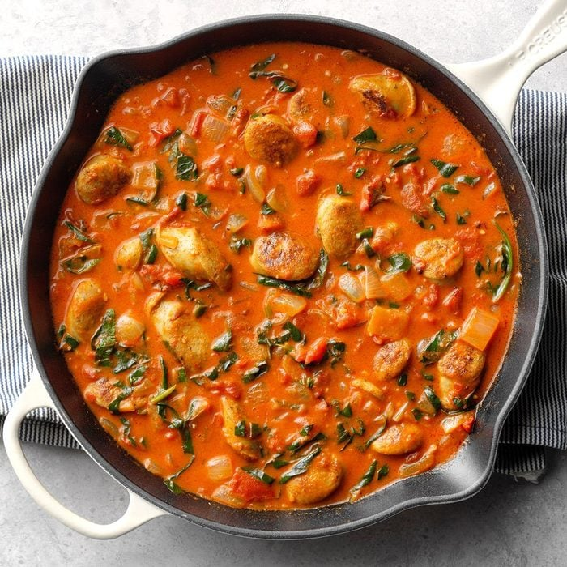

Sausage Curry
Total Time
Prep/Total Time: 30 min.
Makes
4 Servings

Ingredients
- 2 tablespoons olive oil
- 1 package (12 ounces) fully cooked roasted garlic chicken sausage links or flavor of your choice, cut into 1/2-inch slices
- 1 medium onion, chopped
- 2 tablespoons red curry paste
- 1 garlic clove, minced
- 1 can (14-1/2 ounces) fire-roasted diced tomatoes, undrained
- 1 can (13.66 ounces) coconut milk
- 2 cups chopped fresh spinach
- 1/4 teaspoon salt
- 1/8 teaspoon pepper
- 3 cups hot cooked rice
Directions
- In a large skillet, heat oil over medium-high heat. Add sausage and onion; cook and stir until onion is tender and sausage is browned, 3-5 minutes. Add curry paste and garlic; cook 1 minute longer.
- Stir in the tomatoes and coconut milk. Bring to a boil; reduce heat. Simmer, uncovered, al sauce starts to thicken, 7-10 minutes. Add spinach, salt and pepper; cook and stir until spinach begins to wilt. Serve with rice.
Curry Tips
- Fire-roasted diced tomatoes aren't essential if you only have plain diced tomatoes on hand, but they add a subtle smokiness to the dish that helps build flavor.
Nutrition Facts
- 1-1/4 cups curry with 3/4 cup rice
- 560 calories, 30g fat (18g saturated fat)
- 73mg cholesterol
- 526mg sodium
- 1139mg sodium
- 49g carbohydrate (7g sugars, 2g fiber)
- 22g protein
Top